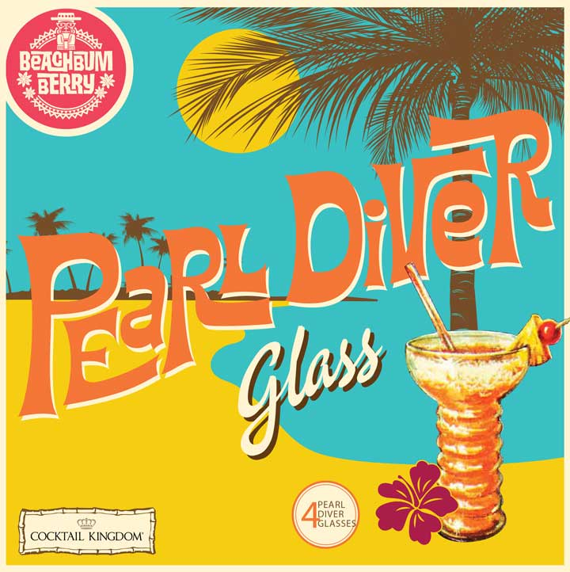
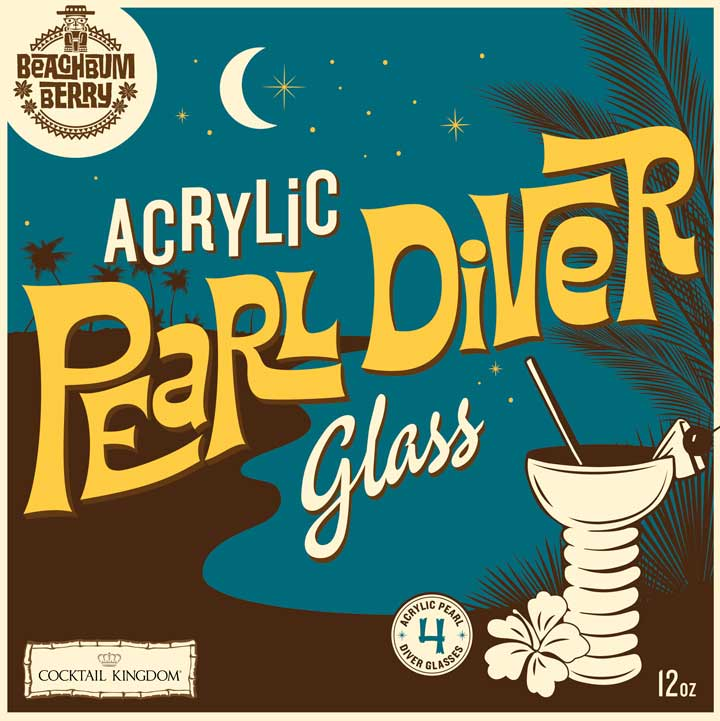

Pearl Diver Glass
In the mid-20th century this uniquely shaped specialty glass was used by Tiki bars and restaurants across the country. Although known as the Pearl Diver glass (after the Pearl Diver cocktail), it also held many other exotic drinks. Some were Pearl Diver variations, such as the Deep Sea Diver (at the Mai-Kai in Ft. Lauderdale) or Skin Diver (The Outrigger in Laguna Beach). But Tiki bartenders also used the glass for many other drinks both classic and obscure (from the Planter’s Punch at Don the Beachcomber’s in Hollywood to the Sumatra Sam at Doc’s Place in Toronto).
Due to a combination of breakage, customer pilferage and high replacement cost, the Pearl Diver glass all but disappeared from commercial use by the 1970s. Today vintage Pearl Diver glasses are exceedingly rare, highly prized collector’s items. But now Cocktail Kingdom has re-created the Pearl Diver down to the last distinctive detail -- so that you can enjoy your exotic drinks in an equally exotic vessel.
You can use the Pearl Diver glass for any tall drink. But it originally held (among many others) its namesake Don The Beachcomber drink. To make a Pearl Diver, place in an electric blender: 1/2 ounce each fresh lime juice, orange juice, Don’s honey-butter mix (see Total Tiki app or Sippin’ Safari for recipe), and Demerara rum; 1 1/2 ounces gold Cuban or Puerto Rican rum; a dash of Angostura bitters; and 4 ounces (1/2 cup) crushed ice. Blend for 20 seconds. Strain through a fine-mesh wire sieve into Pearl Diver glass, pressing gently on solids to express all liquid (discard solids). Add ice to fill. Garnish with a geranium leaf.

BUY NOW (USA — Cocktail Kingdom)BUY NOW (UK — Cocktail Kingdom)
Also available in clear acrylic plastic. Perfect for pool, patio, beach or boat!

BUY NOW (USA — Cocktail Kingdom)BUY NOW (UK — Cocktail Kingdom)